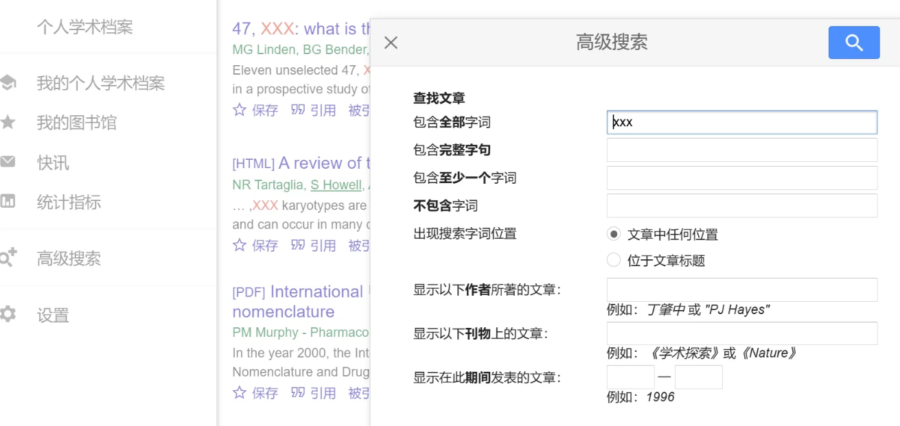

关键词与入口
人体活动识别常写作 human activity recognition，可穿戴设备常写作 wearable。检索词应保留你的数据条件；只写 action recognition 也可能找到以视频为输入的研究。
"human activity recognition" wearable sensor
"human activity recognition" review打开 Google Scholar，输入第一组词，浏览标题与摘要。想了解方法分类时，在末尾加 review 或 survey。医学和生命科学主题也可使用 PubMed；工程论文可继续查 IEEE Xplore 或 Web of Science。

筛选与核对
- 看主题。打开摘要，确认输入确实是可穿戴传感器数据，输出确实是活动类别。
- 看年份。需要近期研究时选择自定义时间范围。综述和经典方法可以早于这个范围。
- 看发表信息。打开出版页面，核对标题、年份、期刊或会议与 DOI。预印本与正式发表版要区分。
- 看实验。关注数据集、训练与测试的划分、对照方法和指标。不同受试者的测试，比把同一人的数据随机拆分更接近跨人使用。
Google Scholar 的“被引用”可以找到后续工作，“相关文章”可以扩展检索。引用次数受发表时间和研究方向影响，新文章可能尚无引用；不能用固定的引用数决定是否值得阅读。
需要查期刊信息时，在 JCR 或中科院分区表中搜索期刊名或 ISSN，并查看指定年度。LetPub、easyScholar 可以辅助定位信息；写进作业的分区应注明体系、年份和学科。
取得全文
搜索结果右侧可能提供 PDF 或机构全文。也可以打开出版页面，用学校图书馆入口取得订阅全文，或查作者主页和开放仓储。保存 PDF 后，用标题或 DOI 再核对一次文献身份。
选一篇与“传感器人体活动识别”相关的研究文章，再从它的参考文献中找到一篇基础工作。比较两篇文章的输入数据和预测目标，这两项应当能从摘要或方法中找到。
结果太多或太少
结果太多时加入数据类型，如 accelerometer；结果太少时删除具体模型名，或用 wearable 替换某一设备品牌。检索式中的 AND、OR 和引号规则随数据库不同，可打开该平台帮助页查看。